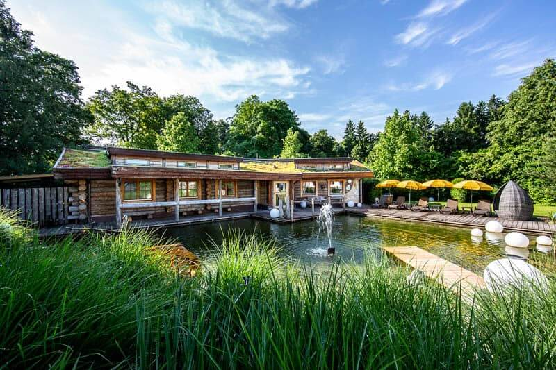
Saunawelt · Ottobrunn
Vier Saunen, ein Dampfbad und die Solewelt, dazu 3.000 qm Garten. Zwanzig Minuten südlich von München und trotzdem weit weg.
Die Saunen
Von 48 Grad im Naturstein-Dampfbad bis 95 Grad in der Stollen-Sauna. Während des Umbaus sind vier Saunen und ein Dampfbad geöffnet, dazu die Solewelt.
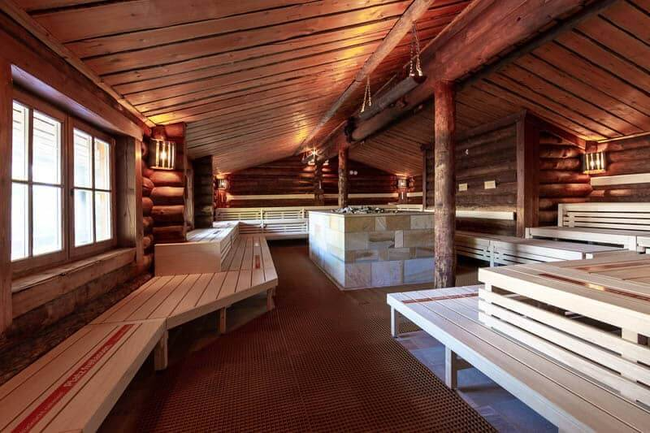
Die Aufgüsse
Elf verschiedene Zeremonien, darunter die Klassiker Eis-Aufguss und Tibet-Aufguss. Auch während des Umbaus bleibt das Programm vollständig.
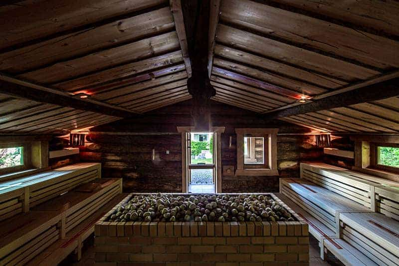
Der Saunagarten
Finnische Saunahütte im Nordosten, mediterraner Außenpool gegenüber, die große Kelosauna am Teich im Süden. Dazwischen Flanierwege, Liege-Hügel und die Pool Bar.
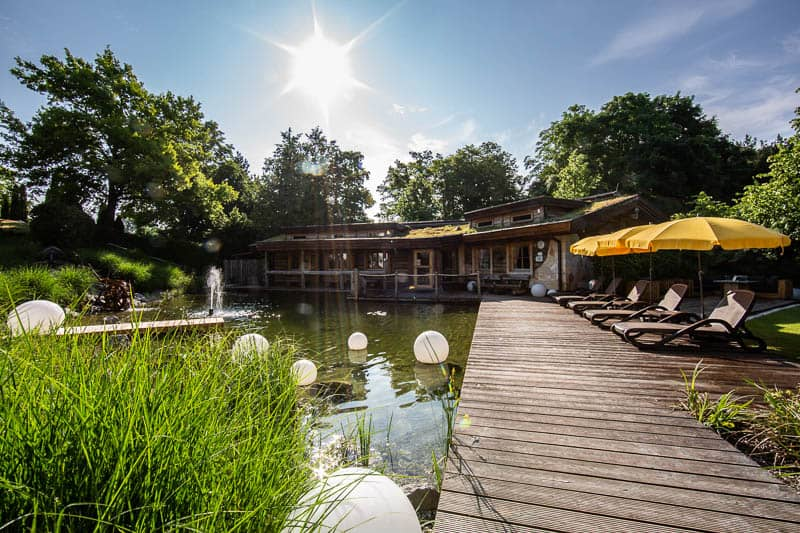
Die Ruhebereiche
Wasserbetten-Schlafraum, mystischer Ruheraum in der Solewelt, Wintergarten unter Glasdach, heller Ruhebereich und der Liege-Hügel draußen. Du suchst aus.
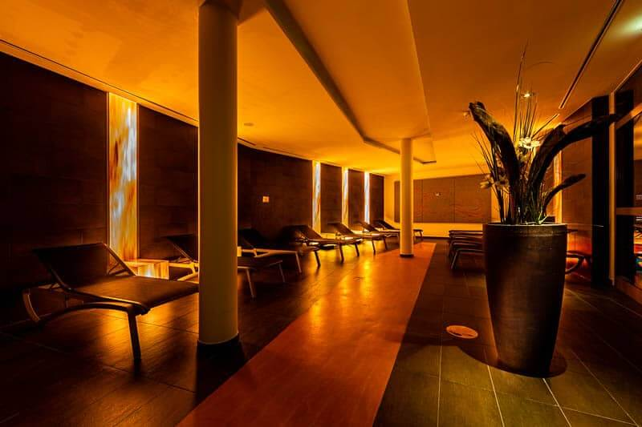
Ab Anfang 2027
Unter der Glaskuppel entsteht eine neue Sauna- und Wellnesswelt. Inspiriert von den heimischen Waldlandschaften und der historischen Salzstraße: Holz, edler Stein, Salzkristalle und warme Farbtöne.
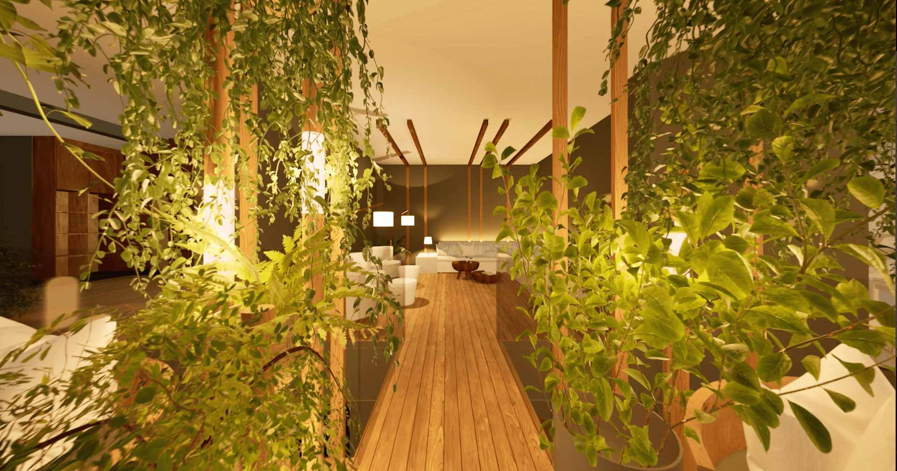
VisualisierungPflanzen, Holz und gedämpftes Licht unter der Glaskuppel.
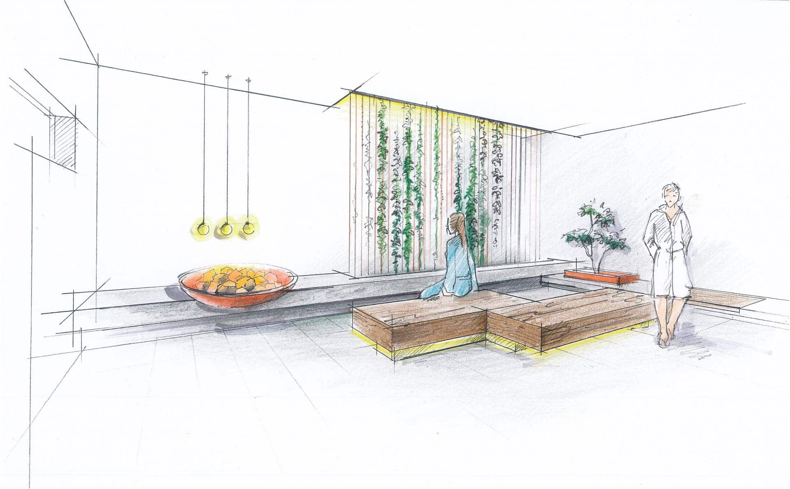
EntwurfszeichnungRuhebereich im Grünen, für die Zeit zwischen zwei Gängen.
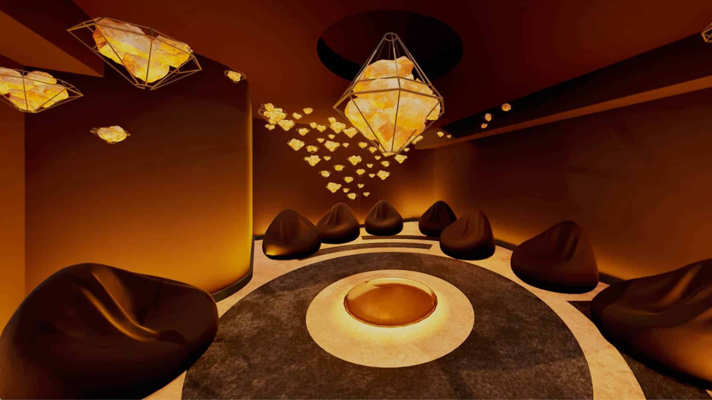
VisualisierungSalzkristalle, warmes Licht, Liegen rund um die Mitte.
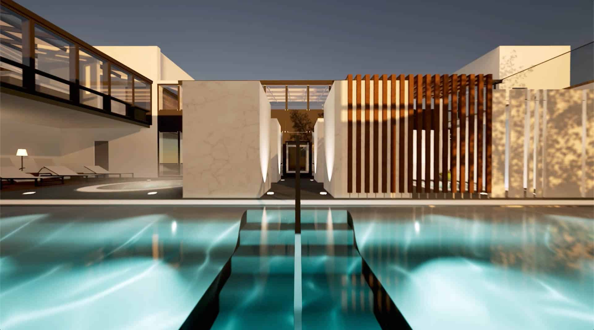
VisualisierungEdelstahlbecken mit Whirlliegen statt des alten Fliesenbeckens.
Platzhalter Namen und Bereiche stammen aus der Vorankündigung des Phönix-Bads. Wie viele Saunen die neue Welt bekommt und wie heiß sie werden, ist öffentlich noch nicht bekannt und steht hier bewusst nicht.
Preise und Zeiten
| Tarif | Mo – Fr | Sa, So, feiertags |
|---|---|---|
| Tageskarte | 36,00 € | 39,00 € |
| 4 Stunden | 31,00 € | 34,00 € |
| Früh-Sauna, Einlass vor 10 Uhr | 25,00 € | – |
| Spät-Sauna, Mo – Do ab 20 Uhr | 23,00 € | – |
| Kinder bis 15, mittwochs | 7,70 € | 7,70 € |
Zum ersten Mal hier
Duschen ist Pflicht, Handtuch unterlegen.
8 Minuten reichen am Anfang, 20 sind die Grenze.
Kalte Dusche, Kneippbecken oder raus in den Garten.
So lange wie der Saunagang gedauert hat.
Neu ab Anfang 2027
Unter der Glaskuppel ist eine neue Sauna- und Wellnesswelt entstanden. Inspiriert von den heimischen Waldlandschaften und der historischen Salzstraße.
Neu · unter der Glaskuppel
Pflanzen, Holz und gedämpftes Licht unter dem Glasdach. Der Raum, der dem Konzept seinen Namen gibt: Waldruhe mitten im Haus.
Neu · Ruhebereich
Ein Ruhebereich im Grünen für die Zeit zwischen zwei Saunagängen. Gedacht als der leiseste Ort im ganzen Haus.
Neu · Salzstraße
Salzkristalle, warmes Licht und Liegen rund um die Mitte. Der Bereich, der die historische Salzstraße aufgreift, die hier einmal vorbeiführte.
Neu · Feuerstelle
Stein, offenes Feuer und eine lange Bank. Der wärmste Platz zum Sitzenbleiben, auch ohne Saunagang.
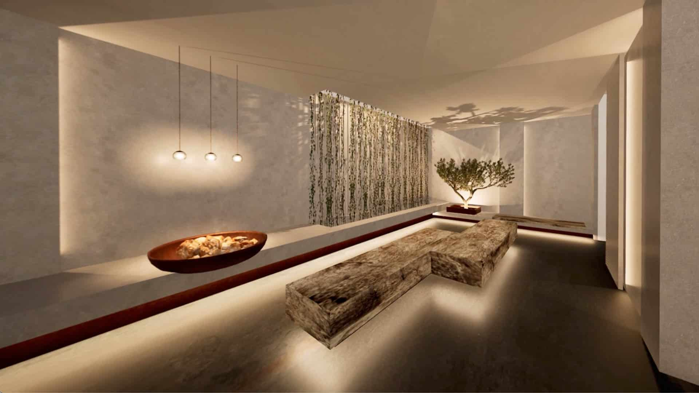
Neu · draußen
Das alte geflieste Becken ist weg. An seiner Stelle steht ein Edelstahlbecken mit Whirlliegen, erreichbar auch über den neuen Aufzug zwischen den Etagen.
Bleibt wie es war
Vom Umbau unberührt: der Saunagarten mit 3.000 qm, die Solewelt, das Day Spa und das Freizeitbad. Die Kelo-Teich-Sauna am Teich bleibt, wo sie ist.
3.000 qm, Teich, Außenpool, Pool Bar.
94 Grad, Blick über den Teich.
Solebecken mit 33 Grad, mystischer Ruheraum.
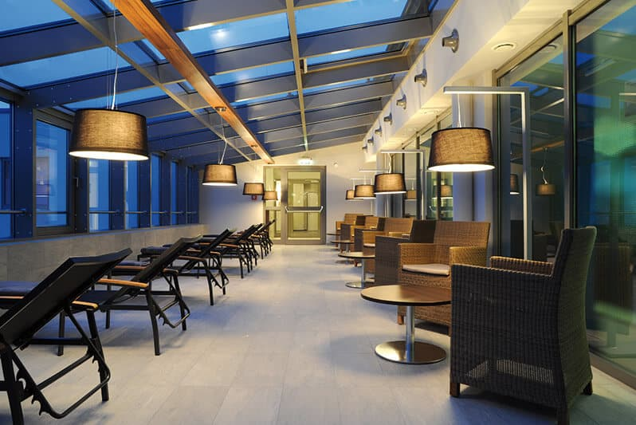
Hell unter Glasdach, auch im Winter.
Platzhalter Namen und Bereiche stammen aus der Vorankündigung des Phönix-Bads, die Bilder aus den Planungsunterlagen der wellverde GmbH. Anzahl und Temperaturen der neuen Saunen, der Aufgussplan und die Preise ab 2027 sind öffentlich nicht bekannt und hier bewusst offen gelassen.
Preise und Zeiten
| Tarif | Mo – Fr | Sa, So, feiertags |
|---|---|---|
| Tageskarte | 36,00 € | 39,00 € |
| 4 Stunden | 31,00 € | 34,00 € |
| Früh-Sauna, Einlass vor 10 Uhr | 25,00 € | – |
| Spät-Sauna, Mo – Do ab 20 Uhr | 23,00 € | – |
| Kinder bis 15, mittwochs | 7,70 € | 7,70 € |